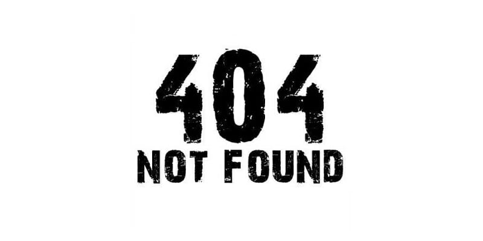

Нажаль, шукана Вами сторінка не найдена
Чому?
- — сторінка, яку Ви шукали, була видалена;
- — адрес (URL) сторінки було змінено;
- — можливо Ви ввели невірний адрес (URL);
Для продовження роботи Ви можете вернутись на початкову сторінку:
Також, Ви можете відвідати сайт франшизи BINOKLтут